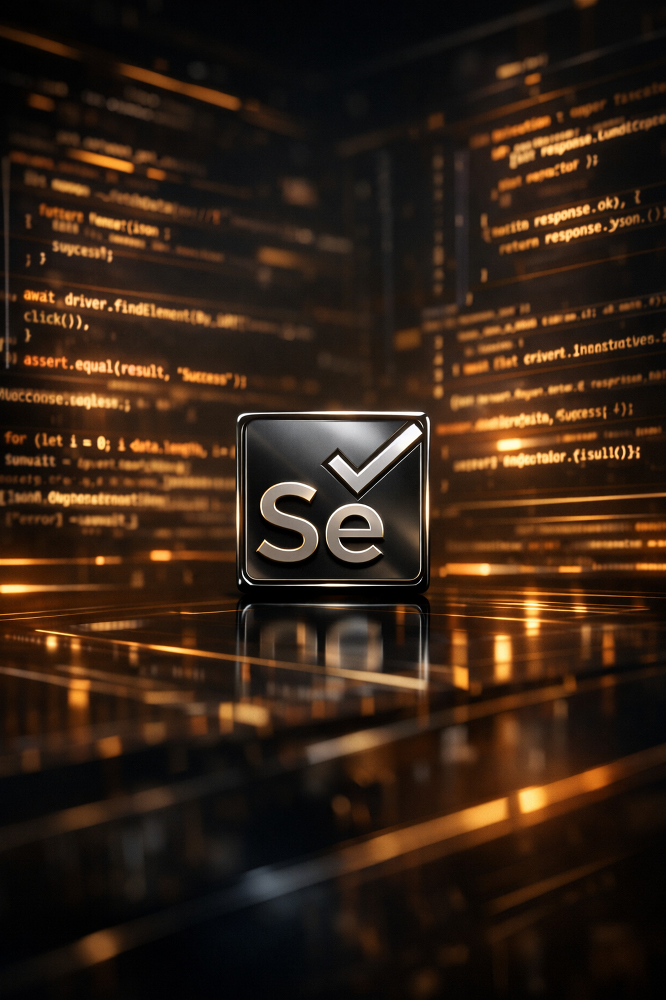
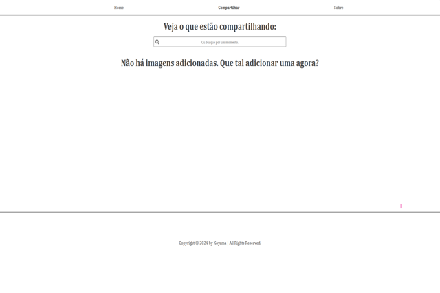
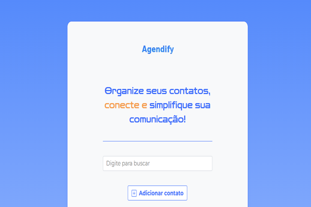
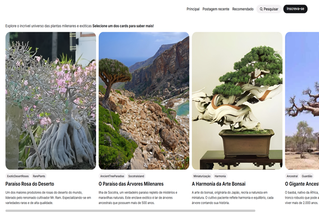
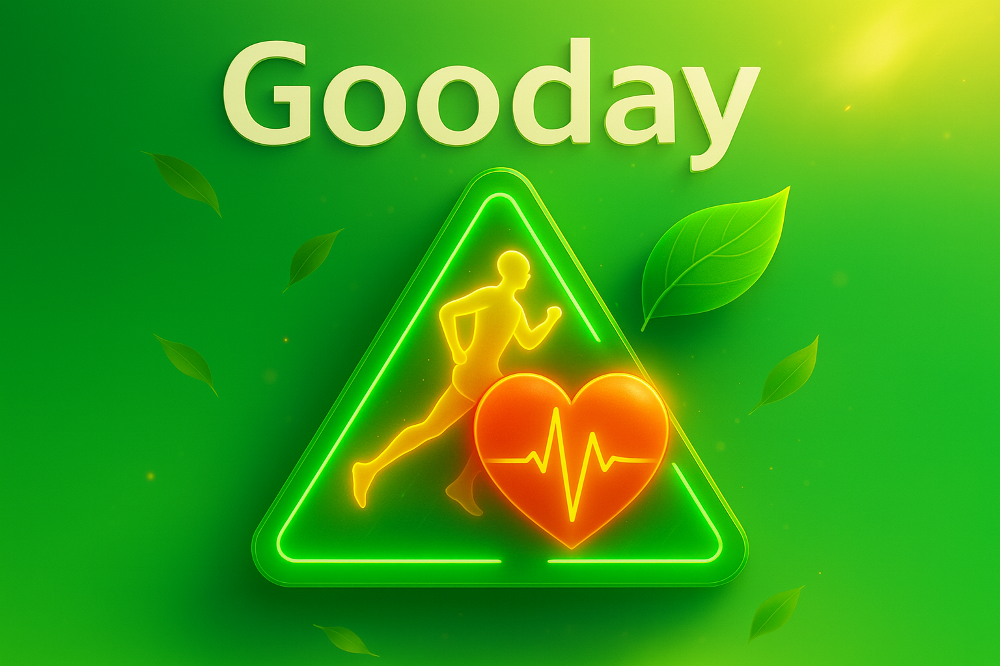

QA, automacao e UX trabalhando juntos desde a ideia ate a entrega.
Portfolio profissional
Construo qualidade, clareza e confianca para produtos digitais.
Atuo com
Automacao, QA e UX

Menos ruido, mais previsibilidade e jornadas mais claras para o usuario.
Introducao
Uma visao completa sobre qualidade digital.
Selenium
Cypress
Postman
GitHub Actions
Jenkins
Figma
Angular
Acessibilidade
Atuo com QA manual e automacao de testes para aplicacoes web e mobile, estruturando estrategias que reforcam confiabilidade, acessibilidade e estabilidade de produto.
Minha experiencia inclui testes exploratorios, validacao de fluxos criticos, integracao com CI/CD e construcao de suites automatizadas com foco em cobertura inteligente e manutencao saudavel.
Tambem trago repertorio em UX/UI Design. Isso me ajuda a olhar para cada entrega nao apenas pelo lado tecnico, mas tambem pelo impacto visual, pela clareza da interface e pela experiencia final do usuario.
QA manual
Mapeamento de risco, validacao funcional e cobertura de jornadas reais.
Automacao
Scripts robustos, regressao continua e suporte a pipelines mais confiaveis.
UX/UI
Mais clareza visual, usabilidade e acessibilidade em cada interface.
Especialidades principais
Onde eu gero impacto de forma mais forte.
Estrategia de testes
Estruturo cenarios, prioridades e criterios de aceite para reduzir risco antes da entrega.
- Analise funcional
- Validacao de fluxos criticos
- Qualidade orientada por negocio
Automacao confiavel
Crio suites pensadas para repetibilidade, manutencao continua e ganho real de produtividade.
- Testes web e API
- Integracao com CI/CD
- Monitoramento de regressao
UX e interface
Uno clareza, acessibilidade e design funcional para tornar a experiencia mais objetiva.
- Wireframes e prototipos
- Usabilidade e acessibilidade
- Consistencia visual
Forma de atuar
Uma jornada inspirada na forma como equipes maduras constroem produto.
Trouxe para o seu portfolio a ideia de narrativa por blocos do projeto de referencia: menos lista solta e mais historia de evolucao, valor e especialidade.
Descoberta
Entender produto, risco e experiencia
Investigo requisitos, pontos sensiveis, acessibilidade e impacto no usuario antes de automatizar ou validar em escala.
Execucao
Testar com profundidade e visao sistemica
Combino testes manuais, automacao, revisao de interface e validacao de fluxo para proteger o produto de ponta a ponta.
Evolucao
Refinar e escalar com mais seguranca
Transformo aprendizados em melhoria continua, documentacao mais clara e entregas mais consistentes para o time.
Projetos selecionados
Casos recentes que mostram minha forma de pensar.
Mantive seus projetos principais e reorganizei a area de portfolio para ficar mais forte visualmente, mais legivel e mais proxima da narrativa premium do projeto de referencia.

Projeto webVistaVault
Plataforma social com foco em compartilhamento de experiencias, privacidade e controle sobre o conteudo publicado.

CRUDAgendadify
Agenda digital com gestao de contatos, validacao de formulario e operacoes completas de cadastro, edicao e remocao.

Landing pageAdenium Aesthetics
Projeto responsivo com foco em narrativa visual, apresentacao de especies exoticas e composicao de marca.
UX/UI
Mordida Express
Projeto de UX Design para um app de lanches com prototipagem responsiva e biblioteca visual ampla para jornadas mais fluidas.

FigmaGooday
Plataforma digital de bem-estar com foco em uma jornada mais saudavel, ativa e conectada a servicos e eventos.
Contato
Vamos conversar sobre qualidade, automacao ou experiencia digital.
Se voce quer fortalecer testes, revisar uma jornada, melhorar acessibilidade ou tirar uma ideia do papel, sera um prazer trocar contexto e entender o desafio.